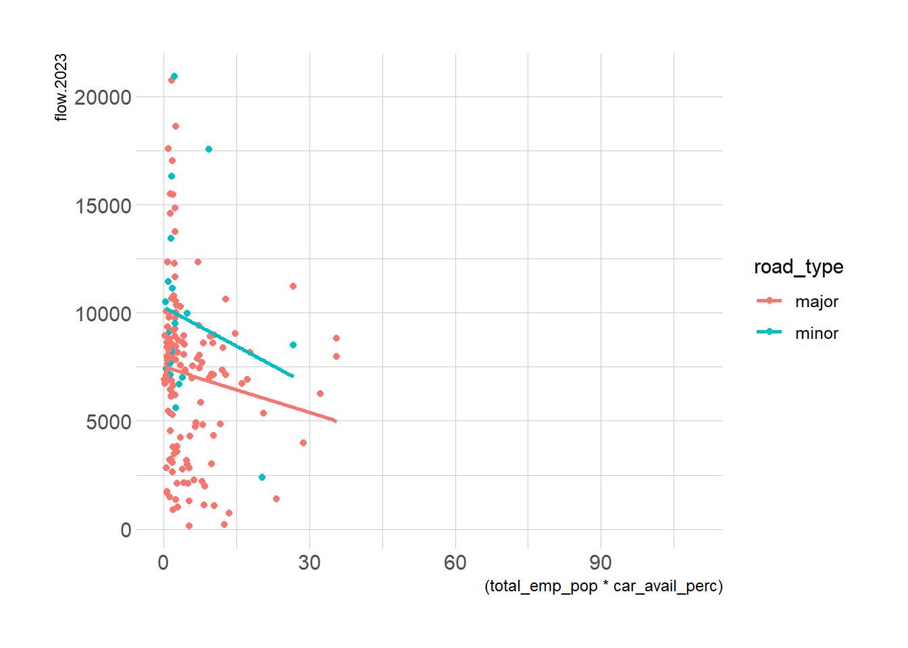
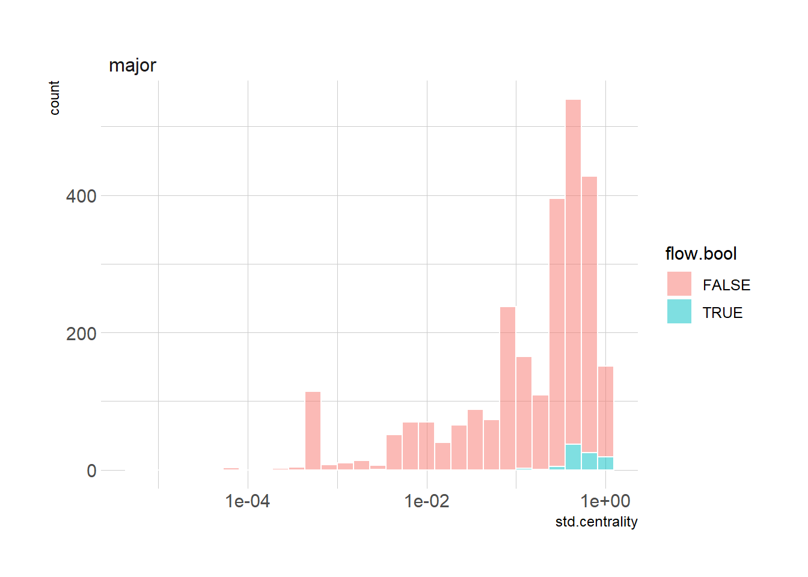

library(tidyverse)
library(kableExtra)
library(hrbrthemes)
library(tmap)
library(sf)Exploratory Data Analysis
net_data_sf <- sf::st_read("03_preprocessing_files/network_data.gpkg", layer = "network_data")Reading layer `network_data' from data source
`C:\Users\ts18jpf\OneDrive - University of Leeds\02_MsC\99_GEOG5099M_Dissertation\GEOG5099_Analysis\03_preprocessing_files\network_data.gpkg'
using driver `GPKG'
Simple feature collection with 46294 features and 32 fields
Geometry type: LINESTRING
Dimension: XY
Bounding box: xmin: 494301.7 ymin: 413484.8 xmax: 523983.6 ymax: 445801.9
Projected CRS: OSGB36 / British National GridLSOA_sf <- sf::st_read("03_preprocessing_files/network_data.gpkg", layer = "LSOA")Reading layer `LSOA' from data source
`C:\Users\ts18jpf\OneDrive - University of Leeds\02_MsC\99_GEOG5099M_Dissertation\GEOG5099_Analysis\03_preprocessing_files\network_data.gpkg'
using driver `GPKG'
Simple feature collection with 259 features and 15 fields
Geometry type: MULTIPOLYGON
Dimension: XY
Bounding box: xmin: 488932.5 ymin: 411729 xmax: 527121.4 ymax: 446712.1
Projected CRS: OSGB36 / British National Gridjct_sf <- sf::st_read("03_preprocessing_files/network_data.gpkg", layer = "junctions")Reading layer `junctions' from data source
`C:\Users\ts18jpf\OneDrive - University of Leeds\02_MsC\99_GEOG5099M_Dissertation\GEOG5099_Analysis\03_preprocessing_files\network_data.gpkg'
using driver `GPKG'
Simple feature collection with 17874 features and 6 fields
Geometry type: POINT
Dimension: XY
Bounding box: xmin: -0.5694518 ymin: 53.60775 xmax: -0.1200969 ymax: 53.89554
Geodetic CRS: WGS 84LSOA_data <- LSOA_sf |> sf::st_drop_geometry()LSOA data is joined with the network data. Also, total population and total people employed are scaled based on the length proportion calculated before. Road type is converted to factor
model_data_sf <- net_data_sf |> left_join(LSOA_data |>
select(LSOA21CD,
total_pop,
total_employed,
wk_pop,
car_avail_perc,
road_density,
cars_percap_2018,area_km2) |>
rename(total_emp_pop = total_employed),
by = join_by(LSOA21CD)) |>
mutate(across(total_pop:wk_pop,
\(x) x*portion_lsoa))model_data <- model_data_sf |>
sf::st_drop_geometry() Extracting sample size based on the number of monitored edges
model_data |>
mutate(bool.flow.2023 = !is.na(flow.2023)) |>
summarise(n_edges = n(),.by = c(bool.flow.2023,road_type)) |>
mutate(sample_size = n_edges/sum(n_edges),
.by = road_type) |>
filter(bool.flow.2023) |>
select(road_type,sample_size) |>
kable(digits = 3) |>
kable_minimal()| road_type | sample_size |
|---|---|
| minor | 0.001 |
| major | 0.015 |
Same analysis with distance (%)
model_data |>
mutate(bool.flow.2023 = !is.na(flow.2023)) |>
summarise(d_edges = sum(d),.by = c(bool.flow.2023,road_type)) |>
mutate(sample_size = d_edges/sum(d_edges),
.by = road_type) |>
filter(bool.flow.2023) |>
select(road_type,sample_size) |>
kable(digits = 3) |>
kable_minimal()| road_type | sample_size |
|---|---|
| minor | 0.001 |
| major | 0.014 |
Analysis of junction types with flows
jct_sf|>
sf::st_drop_geometry() |>
mutate(bool.flow.2023 = !is.na(flow.2023)) |>
summarise(n_jct = n(),.by = c(bool.flow.2023,jct_type)) |>
mutate(sample_size = n_jct/sum(n_jct),
.by = jct_type) |>
filter(bool.flow.2023) |>
select(jct_type,sample_size) |>
kable(digits = 3) |>
kable_minimal()| jct_type | sample_size |
|---|---|
| minmaj | 0.041 |
| minor | 0.001 |
| major | 0.025 |
Centrality vs Flows
model_data |>
ggplot(aes(x=std.centrality,y=flow.2023,col=road_type))+
geom_point()+
geom_smooth(method = "lm",se = F)+
theme_ipsum_rc()`geom_smooth()` using formula = 'y ~ x'Warning: Removed 46136 rows containing non-finite outside the scale range
(`stat_smooth()`).Warning: Removed 46136 rows containing missing values or values outside the scale range
(`geom_point()`).Warning in grid.Call(C_stringMetric, as.graphicsAnnot(x$label)): font family
not found in Windows font database
Warning in grid.Call(C_stringMetric, as.graphicsAnnot(x$label)): font family
not found in Windows font database
Warning in grid.Call(C_stringMetric, as.graphicsAnnot(x$label)): font family
not found in Windows font databaseWarning in grid.Call(C_textBounds, as.graphicsAnnot(x$label), x$x, x$y, : font
family not found in Windows font database
Warning in grid.Call(C_textBounds, as.graphicsAnnot(x$label), x$x, x$y, : font
family not found in Windows font databaseWarning in grid.Call.graphics(C_text, as.graphicsAnnot(x$label), x$x, x$y, :
font family not found in Windows font database
Warning in grid.Call.graphics(C_text, as.graphicsAnnot(x$label), x$x, x$y, :
font family not found in Windows font database
Warning in grid.Call.graphics(C_text, as.graphicsAnnot(x$label), x$x, x$y, :
font family not found in Windows font database
Warning in grid.Call.graphics(C_text, as.graphicsAnnot(x$label), x$x, x$y, :
font family not found in Windows font database
Warning in grid.Call.graphics(C_text, as.graphicsAnnot(x$label), x$x, x$y, :
font family not found in Windows font database
Pop with car availability vs flow
model_data |>
ggplot(aes(x=(total_pop*car_avail_perc),
y=flow.2023,
col=road_type))+
geom_point()+
geom_smooth(method = "lm",se = F)+
theme_ipsum_rc()`geom_smooth()` using formula = 'y ~ x'Warning: Removed 46136 rows containing non-finite outside the scale range
(`stat_smooth()`).Warning: Removed 46136 rows containing missing values or values outside the scale range
(`geom_point()`).Warning in grid.Call(C_textBounds, as.graphicsAnnot(x$label), x$x, x$y, : font
family not found in Windows font database
Warning in grid.Call(C_textBounds, as.graphicsAnnot(x$label), x$x, x$y, : font
family not found in Windows font database
Warning in grid.Call(C_textBounds, as.graphicsAnnot(x$label), x$x, x$y, : font
family not found in Windows font database
Warning in grid.Call(C_textBounds, as.graphicsAnnot(x$label), x$x, x$y, : font
family not found in Windows font databaseWarning in grid.Call.graphics(C_text, as.graphicsAnnot(x$label), x$x, x$y, :
font family not found in Windows font database
Warning in grid.Call.graphics(C_text, as.graphicsAnnot(x$label), x$x, x$y, :
font family not found in Windows font database
Warning in grid.Call.graphics(C_text, as.graphicsAnnot(x$label), x$x, x$y, :
font family not found in Windows font database
Warning in grid.Call.graphics(C_text, as.graphicsAnnot(x$label), x$x, x$y, :
font family not found in Windows font database
Warning in grid.Call.graphics(C_text, as.graphicsAnnot(x$label), x$x, x$y, :
font family not found in Windows font database
Employed Pop with car availability vs flow
model_data |>
ggplot(aes(x=(total_emp_pop*car_avail_perc),
y=flow.2023,
col=road_type))+
geom_point()+
geom_smooth(method = "lm",se = F)+
theme_ipsum_rc()`geom_smooth()` using formula = 'y ~ x'Warning: Removed 46136 rows containing non-finite outside the scale range
(`stat_smooth()`).Warning: Removed 46136 rows containing missing values or values outside the scale range
(`geom_point()`).Warning in grid.Call(C_textBounds, as.graphicsAnnot(x$label), x$x, x$y, : font
family not found in Windows font database
Warning in grid.Call(C_textBounds, as.graphicsAnnot(x$label), x$x, x$y, : font
family not found in Windows font database
Warning in grid.Call(C_textBounds, as.graphicsAnnot(x$label), x$x, x$y, : font
family not found in Windows font database
Warning in grid.Call(C_textBounds, as.graphicsAnnot(x$label), x$x, x$y, : font
family not found in Windows font databaseWarning in grid.Call.graphics(C_text, as.graphicsAnnot(x$label), x$x, x$y, :
font family not found in Windows font database
Warning in grid.Call.graphics(C_text, as.graphicsAnnot(x$label), x$x, x$y, :
font family not found in Windows font database
Warning in grid.Call.graphics(C_text, as.graphicsAnnot(x$label), x$x, x$y, :
font family not found in Windows font database
Warning in grid.Call.graphics(C_text, as.graphicsAnnot(x$label), x$x, x$y, :
font family not found in Windows font database
Warning in grid.Call.graphics(C_text, as.graphicsAnnot(x$label), x$x, x$y, :
font family not found in Windows font database
Workplace Pop vs flow
model_data |>
ggplot(aes(x=wk_pop,
y=flow.2023,
col=road_type))+
geom_point()+
scale_x_log10()+
geom_smooth(method = "lm",se = F)+
theme_ipsum_rc()`geom_smooth()` using formula = 'y ~ x'Warning: Removed 46136 rows containing non-finite outside the scale range
(`stat_smooth()`).Warning: Removed 46136 rows containing missing values or values outside the scale range
(`geom_point()`).Warning in grid.Call(C_textBounds, as.graphicsAnnot(x$label), x$x, x$y, : font
family not found in Windows font database
Warning in grid.Call(C_textBounds, as.graphicsAnnot(x$label), x$x, x$y, : font
family not found in Windows font database
Warning in grid.Call(C_textBounds, as.graphicsAnnot(x$label), x$x, x$y, : font
family not found in Windows font database
Warning in grid.Call(C_textBounds, as.graphicsAnnot(x$label), x$x, x$y, : font
family not found in Windows font databaseWarning in grid.Call.graphics(C_text, as.graphicsAnnot(x$label), x$x, x$y, :
font family not found in Windows font database
Warning in grid.Call.graphics(C_text, as.graphicsAnnot(x$label), x$x, x$y, :
font family not found in Windows font database
Warning in grid.Call.graphics(C_text, as.graphicsAnnot(x$label), x$x, x$y, :
font family not found in Windows font database
Warning in grid.Call.graphics(C_text, as.graphicsAnnot(x$label), x$x, x$y, :
font family not found in Windows font database
Warning in grid.Call.graphics(C_text, as.graphicsAnnot(x$label), x$x, x$y, :
font family not found in Windows font databaseAlternatively, population and jobs serviced can be used as as per Selby 2011.
isochrones <- read_csv("03_preprocessing_files/junctions_catchment.csv")Rows: 4886751 Columns: 5
── Column specification ────────────────────────────────────────────────────────
Delimiter: ","
dbl (5): from, tlim, id, x, y
ℹ Use `spec()` to retrieve the full column specification for this data.
ℹ Specify the column types or set `show_col_types = FALSE` to quiet this message.consolidated_catchment <- isochrones |>
mutate(id = as.character(id)) |>
left_join(model_data |>
select(to_id, total_pop, total_emp_pop, wk_pop),
by=c("id"="to_id"),
relationship = "many-to-many") |>
summarise(across(ends_with("pop"),
\(x) sum(x,na.rm = T)),
.by = c(from,tlim)) |>
right_join(isochrones |>
expand(from,tlim),
by = c("from","tlim")) |>
arrange(from,tlim) |>
mutate(across(ends_with("pop"),
\(x) if_else(is.na(x),0,x)),
across(ends_with("pop"),
list(c = \(x) cumsum(x))),
.by = from) |>
select(from,tlim,ends_with("c")) |>
pivot_wider(names_from = tlim,values_from = total_pop_c:wk_pop_c) |>
mutate(from = as.character(from))Catchment of residents within 2 minutes
tmap_mode("plot")tmap mode set to plottingtm_shape(model_data_sf)+
tm_lines("skyblue",lwd = 0.7)+
tm_shape(model_data_sf |>
left_join(consolidated_catchment,
by = c("from_id"="from")) |>
filter(!is.na(total_pop_c_2)))+
tm_lines("total_pop_c_2",lwd = 2)Catchment of employed residents within 2 minutes
tm_shape(model_data_sf)+
tm_lines("skyblue",lwd = 0.7)+
tm_shape(model_data_sf |>
left_join(consolidated_catchment,
by = c("from_id"="from")) |>
filter(!is.na(total_emp_pop_c_2)))+
tm_lines("wk_pop_c_2",lwd = 2)Catchment of usual workplace population
tm_shape(model_data_sf)+
tm_lines("skyblue",lwd = 0.7)+
tm_shape(model_data_sf |>
left_join(consolidated_catchment,
by = c("from_id"="from")) |>
filter(!is.na(wk_pop_c_2)))+
tm_lines("wk_pop_c_2",lwd = 2)
Joining the catchment to the model_data dataset
model_data_expanded <- model_data_sf |>
left_join(consolidated_catchment,
by = c("from_id"="from")) |>
select(edge_id,
flow.2022,
flow.2023,
centrality,
car_avail_perc,
total_pop_c_1:wk_pop_c_5,
road_density) |>
mutate(across(contains("pop"),\(x) x/1e3),
centrality = centrality/1e6,
across(starts_with("flow."),\(x) round(x) |> as.integer()))model_data_expanded |>
st_drop_geometry() |>
select(flow.2023, centrality, total_pop_c_2,total_emp_pop_c_2, wk_pop_c_2) |>
drop_na(flow.2023, centrality, total_pop_c_2,total_emp_pop_c_2, wk_pop_c_2) |>
# mutate(across(everything(),log)) |>
GGally::ggpairs()Registered S3 method overwritten by 'GGally':
method from
+.gg ggplot2GLM model
model_data_noNAs<- model_data_expanded |>
select(flow.2022,
flow.2023,
centrality,
car_avail_perc,
total_pop_c_1:wk_pop_c_5,
road_density) |>
drop_na()A simple model with the centrality only for major roads
GLM_models <- lapply(
1:5,
function(i) {
myformula <- as.formula(paste0(
"flow.2023 ~ total_pop_c_",
i,
" + wk_pop_c_",
i,
" + road_density"
))
m <- glm(myformula,
data = model_data_noNAs,
family = poisson())
}
)lapply(GLM_models,
function(mymodel){
beta <- coef(mymodel)
exp(confint(mymodel,level = 0.95))
})Waiting for profiling to be done...
Waiting for profiling to be done...
Waiting for profiling to be done...
Waiting for profiling to be done...
Waiting for profiling to be done...[[1]]
2.5 % 97.5 %
(Intercept) 4865.4776070 4967.3479886
total_pop_c_1 0.8966613 0.8993604
wk_pop_c_1 1.0484353 1.0526344
road_density 1.0204817 1.0211492
[[2]]
2.5 % 97.5 %
(Intercept) 5036.1757918 5145.7836105
total_pop_c_2 0.9690704 0.9700004
wk_pop_c_2 1.0142179 1.0156993
road_density 1.0196172 1.0203078
[[3]]
2.5 % 97.5 %
(Intercept) 5686.313138 5833.1467622
total_pop_c_3 0.983754 0.9843075
wk_pop_c_3 1.001621 1.0026137
road_density 1.018770 1.0194854
[[4]]
2.5 % 97.5 %
(Intercept) 6349.5268888 6556.7859337
total_pop_c_4 0.9887865 0.9891939
wk_pop_c_4 1.0020115 1.0028205
road_density 1.0158084 1.0165571
[[5]]
2.5 % 97.5 %
(Intercept) 8412.2279997 8747.4312576
total_pop_c_5 0.9908878 0.9912083
wk_pop_c_5 0.9952970 0.9959772
road_density 1.0155729 1.0163313RMSE
GLM_RMSE <- vapply(
GLM_models,
function(mymodel) {
mean((mymodel$data$flow.2023 - mymodel$fitted.values) ^ 2) ^ 0.5
},
numeric(1))AICc
null model to compare AICc of fitted models
null.m <- glm(flow.2023 ~ 1,
data = model_data_noNAs,
family = poisson())
# AICc for null model
extractAIC(null.m)[2][1] 294891.4GLM_AICc <- vapply(GLM_models,
function(mymodel) {
extractAIC(mymodel)[2]
},
numeric(1)) GWPR
library(GWmodel)Loading required package: robustbaseLoading required package: spLoading required package: RcppWelcome to GWmodel version 2.3-2.model_data_noNAs_sp <- as(model_data_noNAs |> st_centroid(),"Spatial")Warning: st_centroid assumes attributes are constant over geometriesdMat <- model_data_noNAs |> st_centroid() |> st_coordinates() |> gw.dist()Warning: st_centroid assumes attributes are constant over geometriesGWPR_models <- lapply(
1:5,
function(i){
myformula <- as.formula(paste0(
"flow.2023 ~ total_pop_c_",
i,
" + wk_pop_c_",
i,
" + road_density"
))
# Determine the adaptive bandwidth
abw <- bw.ggwr(
formula = myformula,
data = model_data_noNAs_sp,
family = "poisson",
approach = "AICc",
kernel = "bisquare",
adaptive = TRUE,
dMat = dMat
)
# Fit GWPR
gwpr.m <- ggwr.basic(
myformula,
data = model_data_noNAs_sp,
family = "poisson",
bw = abw,
kernel = "bisquare",
adaptive = TRUE,
dMat = dMat
)
}
) Iteration Log-Likelihood(With bandwidth: 89 )
=========================
0 -1.269e+05
1 -1.136e+05
2 -1.131e+05
3 -1.13e+05
4 -1.13e+05
5 -1.13e+05
Adaptive bandwidth (number of nearest neighbours): 89 AICc value: 225945.8
Iteration Log-Likelihood(With bandwidth: 63 )
=========================
0 -1.205e+05
1 -1.078e+05
2 -1.074e+05
3 -1.072e+05
4 -1.072e+05
5 -1.072e+05
Adaptive bandwidth (number of nearest neighbours): 63 AICc value: 214429.4
Iteration Log-Likelihood(With bandwidth: 45 )
=========================
0 -1.165e+05
1 -1.032e+05
2 -1.029e+05
3 -1.027e+05
4 -1.026e+05
5 -1.026e+05
Adaptive bandwidth (number of nearest neighbours): 45 AICc value: 205339.3
Iteration Log-Likelihood(With bandwidth: 36 )
=========================
0 -1.07e+05
1 -9.419e+04
2 -9.448e+04
3 -9.42e+04
4 -9.418e+04
5 -9.418e+04
Adaptive bandwidth (number of nearest neighbours): 36 AICc value: 188423.5
Iteration Log-Likelihood(With bandwidth: 28 )
=========================
0 -9.384e+04
1 -8.376e+04
2 -8.391e+04
3 -8.352e+04
4 -8.349e+04
5 -8.349e+04
6 -8.349e+04
Adaptive bandwidth (number of nearest neighbours): 28 AICc value: 167069.4
Iteration Log-Likelihood(With bandwidth: 25 )
=========================
0 -9.091e+04
1 -8.123e+04
2 -8.121e+04
3 -8.081e+04
4 -8.077e+04
5 -8.077e+04
6 -8.077e+04
Adaptive bandwidth (number of nearest neighbours): 25 AICc value: 161644.1
Iteration Log-Likelihood(With bandwidth: 21 )
=========================
0 -8.684e+04
1 -7.671e+04
2 -7.646e+04
3 -7.613e+04
4 -7.61e+04
5 -7.61e+04
6 -7.61e+04
Adaptive bandwidth (number of nearest neighbours): 21 AICc value: 152328
Iteration Log-Likelihood(With bandwidth: 21 )
=========================
0 -8.684e+04
1 -7.671e+04
2 -7.646e+04
3 -7.613e+04
4 -7.61e+04
5 -7.61e+04
6 -7.61e+04
Adaptive bandwidth (number of nearest neighbours): 21 AICc value: 152328
Iteration Log-Likelihood
=========================
0 -8.684e+04
1 -7.671e+04
2 -7.646e+04
3 -7.613e+04
4 -7.61e+04
5 -7.61e+04
6 -7.61e+04
Iteration Log-Likelihood(With bandwidth: 89 )
=========================
0 -1.302e+05
1 -1.147e+05
2 -1.142e+05
3 -1.141e+05
4 -1.141e+05
5 -1.141e+05
Adaptive bandwidth (number of nearest neighbours): 89 AICc value: 228203.1
Iteration Log-Likelihood(With bandwidth: 63 )
=========================
0 -1.224e+05
1 -1.085e+05
2 -1.08e+05
3 -1.078e+05
4 -1.078e+05
5 -1.078e+05
Adaptive bandwidth (number of nearest neighbours): 63 AICc value: 215639.3
Iteration Log-Likelihood(With bandwidth: 45 )
=========================
0 -1.165e+05
1 -1.014e+05
2 -1.013e+05
3 -1.011e+05
4 -1.011e+05
5 -1.011e+05
Adaptive bandwidth (number of nearest neighbours): 45 AICc value: 202226.3
Iteration Log-Likelihood(With bandwidth: 36 )
=========================
0 -1.095e+05
1 -9.39e+04
2 -9.398e+04
3 -9.372e+04
4 -9.37e+04
5 -9.37e+04
Adaptive bandwidth (number of nearest neighbours): 36 AICc value: 187472.5
Iteration Log-Likelihood(With bandwidth: 28 )
=========================
0 -9.567e+04
1 -8.325e+04
2 -8.29e+04
3 -8.264e+04
4 -8.262e+04
5 -8.262e+04
Adaptive bandwidth (number of nearest neighbours): 28 AICc value: 165336
Iteration Log-Likelihood(With bandwidth: 25 )
=========================
0 -9.195e+04
1 -8.075e+04
2 -8.022e+04
3 -7.996e+04
4 -7.994e+04
5 -7.994e+04
6 -7.994e+04
Adaptive bandwidth (number of nearest neighbours): 25 AICc value: 159980.7
Iteration Log-Likelihood(With bandwidth: 21 )
=========================
0 -8.74e+04
1 -7.729e+04
2 -7.633e+04
3 -7.607e+04
4 -7.604e+04
5 -7.605e+04
6 -7.605e+04
Adaptive bandwidth (number of nearest neighbours): 21 AICc value: 152209
Iteration Log-Likelihood(With bandwidth: 21 )
=========================
0 -8.74e+04
1 -7.729e+04
2 -7.633e+04
3 -7.607e+04
4 -7.604e+04
5 -7.605e+04
6 -7.605e+04
Adaptive bandwidth (number of nearest neighbours): 21 AICc value: 152209
Iteration Log-Likelihood
=========================
0 -8.74e+04
1 -7.729e+04
2 -7.633e+04
3 -7.607e+04
4 -7.604e+04
5 -7.605e+04
6 -7.605e+04
Iteration Log-Likelihood(With bandwidth: 89 )
=========================
0 -1.314e+05
1 -1.167e+05
2 -1.161e+05
3 -1.16e+05
4 -1.16e+05
5 -1.16e+05
Adaptive bandwidth (number of nearest neighbours): 89 AICc value: 231957.4
Iteration Log-Likelihood(With bandwidth: 63 )
=========================
0 -1.218e+05
1 -1.096e+05
2 -1.092e+05
3 -1.089e+05
4 -1.089e+05
5 -1.089e+05
Adaptive bandwidth (number of nearest neighbours): 63 AICc value: 217784.9
Iteration Log-Likelihood(With bandwidth: 45 )
=========================
0 -1.125e+05
1 -1.015e+05
2 -1.016e+05
3 -1.013e+05
4 -1.013e+05
5 -1.013e+05
Adaptive bandwidth (number of nearest neighbours): 45 AICc value: 202582.9
Iteration Log-Likelihood(With bandwidth: 36 )
=========================
0 -1.022e+05
1 -9.111e+04
2 -9.163e+04
3 -9.131e+04
4 -9.129e+04
5 -9.129e+04
Adaptive bandwidth (number of nearest neighbours): 36 AICc value: 182652.5
Iteration Log-Likelihood(With bandwidth: 28 )
=========================
0 -8.749e+04
1 -7.987e+04
2 -7.97e+04
3 -7.948e+04
4 -7.947e+04
5 -7.947e+04
Adaptive bandwidth (number of nearest neighbours): 28 AICc value: 159036.7
Iteration Log-Likelihood(With bandwidth: 25 )
=========================
0 -8.405e+04
1 -7.7e+04
2 -7.674e+04
3 -7.65e+04
4 -7.649e+04
5 -7.65e+04
Adaptive bandwidth (number of nearest neighbours): 25 AICc value: 153088.3
Iteration Log-Likelihood(With bandwidth: 21 )
=========================
0 -7.905e+04
1 -7.212e+04
2 -7.189e+04
3 -7.163e+04
4 -7.161e+04
5 -7.161e+04
Adaptive bandwidth (number of nearest neighbours): 21 AICc value: 143325.6
Iteration Log-Likelihood(With bandwidth: 21 )
=========================
0 -7.905e+04
1 -7.212e+04
2 -7.189e+04
3 -7.163e+04
4 -7.161e+04
5 -7.161e+04
Adaptive bandwidth (number of nearest neighbours): 21 AICc value: 143325.6
Iteration Log-Likelihood
=========================
0 -7.905e+04
1 -7.212e+04
2 -7.189e+04
3 -7.163e+04
4 -7.161e+04
5 -7.161e+04
Iteration Log-Likelihood(With bandwidth: 89 )
=========================
0 -1.252e+05
1 -1.141e+05
2 -1.137e+05
3 -1.135e+05
4 -1.135e+05
5 -1.135e+05
Adaptive bandwidth (number of nearest neighbours): 89 AICc value: 227077.5
Iteration Log-Likelihood(With bandwidth: 63 )
=========================
0 -1.16e+05
1 -1.074e+05
2 -1.071e+05
3 -1.068e+05
4 -1.068e+05
5 -1.068e+05
Adaptive bandwidth (number of nearest neighbours): 63 AICc value: 213634.5
Iteration Log-Likelihood(With bandwidth: 45 )
=========================
0 -1.11e+05
1 -1.003e+05
2 -1.002e+05
3 -9.989e+04
4 -9.987e+04
5 -9.987e+04
Adaptive bandwidth (number of nearest neighbours): 45 AICc value: 199785.4
Iteration Log-Likelihood(With bandwidth: 36 )
=========================
0 -1.053e+05
1 -9.193e+04
2 -9.247e+04
3 -9.216e+04
4 -9.214e+04
5 -9.214e+04
Adaptive bandwidth (number of nearest neighbours): 36 AICc value: 184344.8
Iteration Log-Likelihood(With bandwidth: 28 )
=========================
0 -9.716e+04
1 -8.298e+04
2 -8.345e+04
3 -8.316e+04
4 -8.312e+04
5 -8.312e+04
Adaptive bandwidth (number of nearest neighbours): 28 AICc value: 166324.5
Iteration Log-Likelihood(With bandwidth: 25 )
=========================
0 -9.412e+04
1 -7.998e+04
2 -8.061e+04
3 -8.029e+04
4 -8.024e+04
5 -8.024e+04
Adaptive bandwidth (number of nearest neighbours): 25 AICc value: 160577.7
Iteration Log-Likelihood(With bandwidth: 21 )
=========================
0 -8.655e+04
1 -7.427e+04
2 -7.477e+04
3 -7.444e+04
4 -7.437e+04
5 -7.437e+04
Adaptive bandwidth (number of nearest neighbours): 21 AICc value: 148857.3
Iteration Log-Likelihood(With bandwidth: 21 )
=========================
0 -8.655e+04
1 -7.427e+04
2 -7.477e+04
3 -7.444e+04
4 -7.437e+04
5 -7.437e+04
Adaptive bandwidth (number of nearest neighbours): 21 AICc value: 148857.3
Iteration Log-Likelihood
=========================
0 -8.655e+04
1 -7.427e+04
2 -7.477e+04
3 -7.444e+04
4 -7.437e+04
5 -7.437e+04
Iteration Log-Likelihood(With bandwidth: 89 )
=========================
0 -1.264e+05
1 -1.147e+05
2 -1.142e+05
3 -1.14e+05
4 -1.139e+05
5 -1.139e+05
Adaptive bandwidth (number of nearest neighbours): 89 AICc value: 227912.2
Iteration Log-Likelihood(With bandwidth: 63 )
=========================
0 -1.178e+05
1 -1.072e+05
2 -1.07e+05
3 -1.067e+05
4 -1.067e+05
5 -1.067e+05
Adaptive bandwidth (number of nearest neighbours): 63 AICc value: 213462.7
Iteration Log-Likelihood(With bandwidth: 45 )
=========================
0 -1.123e+05
1 -9.869e+04
2 -9.931e+04
3 -9.899e+04
4 -9.897e+04
5 -9.897e+04
Adaptive bandwidth (number of nearest neighbours): 45 AICc value: 197993.1
Iteration Log-Likelihood(With bandwidth: 36 )
=========================
0 -1.035e+05
1 -9.003e+04
2 -9.099e+04
3 -9.065e+04
4 -9.062e+04
5 -9.062e+04
Adaptive bandwidth (number of nearest neighbours): 36 AICc value: 181310.5
Iteration Log-Likelihood(With bandwidth: 28 )
=========================
0 -9.142e+04
1 -8.059e+04
2 -8.098e+04
3 -8.068e+04
4 -8.063e+04
5 -8.063e+04
Adaptive bandwidth (number of nearest neighbours): 28 AICc value: 161351
Iteration Log-Likelihood(With bandwidth: 25 )
=========================
0 -8.883e+04
1 -7.809e+04
2 -7.844e+04
3 -7.813e+04
4 -7.807e+04
5 -7.807e+04
Adaptive bandwidth (number of nearest neighbours): 25 AICc value: 156240.7
Iteration Log-Likelihood(With bandwidth: 21 )
=========================
0 -8.398e+04
1 -7.417e+04
2 -7.426e+04
3 -7.396e+04
4 -7.389e+04
5 -7.389e+04
Adaptive bandwidth (number of nearest neighbours): 21 AICc value: 147904.2
Iteration Log-Likelihood(With bandwidth: 21 )
=========================
0 -8.398e+04
1 -7.417e+04
2 -7.426e+04
3 -7.396e+04
4 -7.389e+04
5 -7.389e+04
Adaptive bandwidth (number of nearest neighbours): 21 AICc value: 147904.2
Iteration Log-Likelihood
=========================
0 -8.398e+04
1 -7.417e+04
2 -7.426e+04
3 -7.396e+04
4 -7.389e+04
5 -7.389e+04 lapply(GWPR_models,
function(mymodel){
# table of GWR coefficients
t1 = exp(apply(mymodel$SDF@data[, 1:4], 2, summary)) |> t()
})[[1]]
Min. 1st Qu. Median Mean 3rd Qu.
Intercept 209.5115953 2706.8901174 4761.5842512 5272.6826026 12824.426777
total_pop_c_1 0.2826091 0.6294897 0.8359314 0.7934424 0.951624
wk_pop_c_1 0.3994004 0.8311038 1.0930616 1.4094738 1.583483
road_density 0.8834349 0.9954735 1.0291904 1.0154897 1.046026
Max.
Intercept 5.793145e+05
total_pop_c_1 2.687135e+00
wk_pop_c_1 2.437727e+01
road_density 1.100150e+00
[[2]]
Min. 1st Qu. Median Mean 3rd Qu.
Intercept 262.5914336 938.9823888 5348.6772681 4833.5415853 19472.268932
total_pop_c_2 0.6487054 0.9105410 0.9803415 0.9878196 1.108722
wk_pop_c_2 0.6570873 0.8470724 0.9835251 0.9738111 1.126022
road_density 0.8626242 0.9845310 1.0275962 1.0162966 1.053853
Max.
Intercept 3.616465e+05
total_pop_c_2 1.606969e+00
wk_pop_c_2 1.309068e+00
road_density 1.113645e+00
[[3]]
Min. 1st Qu. Median Mean 3rd Qu.
Intercept 0.1045393 181.5647409 2235.8898892 1322.1114510 20046.006548
total_pop_c_3 0.8368891 0.9876732 1.0186121 1.0817844 1.133826
wk_pop_c_3 0.6420028 0.8572093 0.9396061 0.9416695 1.036961
road_density 0.8933187 0.9845120 1.0223583 1.0208154 1.055233
Max.
Intercept 4.325350e+05
total_pop_c_3 1.753976e+00
wk_pop_c_3 1.398659e+00
road_density 1.209546e+00
[[4]]
Min. 1st Qu. Median Mean 3rd Qu.
Intercept 16.3420907 729.2603747 1766.225541 5003.4524988 34587.889625
total_pop_c_4 0.6591663 0.9614065 1.004800 0.9870989 1.029643
wk_pop_c_4 0.8085046 0.9555005 0.985737 1.0086230 1.071736
road_density 0.9100827 0.9903496 1.024785 1.0209667 1.051285
Max.
Intercept 5.013170e+10
total_pop_c_4 1.164459e+00
wk_pop_c_4 1.220255e+00
road_density 1.177830e+00
[[5]]
Min. 1st Qu. Median Mean 3rd Qu.
Intercept 0.1032959 979.8161668 5536.5618288 4062.4169991 23022.035325
total_pop_c_5 0.8877411 0.9666785 0.9958527 0.9945819 1.010032
wk_pop_c_5 0.7959886 0.9612977 0.9838849 1.0102427 1.088677
road_density 0.8973587 0.9931017 1.0233582 1.0196593 1.051861
Max.
Intercept 4.685754e+07
total_pop_c_5 1.162354e+00
wk_pop_c_5 1.286158e+00
road_density 1.178793e+00RMSE
GWPR_RMSE <- vapply(
GWPR_models,
function(mymodel) {
mean((mymodel$SDF$y - mymodel$SDF$yhat) ^ 2) ^ 0.5
},
numeric(1))AICc
GWPR_AICc <- vapply(GWPR_models,
function(mymodel) {
mymodel$glms$aic
},
numeric(1)) This to do:
- add a function to run the regression models with different catchment distances done
- extract RMSE done, AICc done and \(R^2\) metrics
- add a GLM of the poisson family done
- add GWPR done
- add a bayesian linear regression